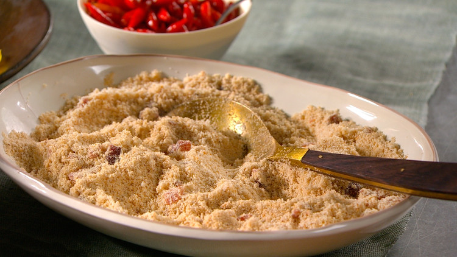

Farofa

Farofa is a traditional Brazilian side dish made with toasted yuca flour/cassava flour, or how we call it in Portuguese farinha de mandioca. This dish is mainly eaten in Brazil or by the Brazilian diaspora and it’s normally available in Brazilian restaurants all over the world.
Ingredients
- 3 strips smoked bacon, diced
- 1 medium white onion, chopped
- 2 cloves of garlic, minced
- 5 tablespoons butter or vegetable oil
- 2 cups (250 grams) cassava flour
- 1/4 cup parsley, finely chopped
- 1/4 cup chives, finely chopped
- Salt and pepper to taste
Instrunctions
- In a cold skillet, cook the bacon over medium heat until golden brown. The reason for that is because you need to render the bacon fat before frying it.
- Once the fat is rendered, add the butter and cook the bacon until golden brown.
- Add the finely chopped onions and sauté them until transparent.
- Add the garlic and sauté it for a minute.
- Add the cassava flour and stir continuously to avoid letting it burn.
- Add salt and pepper to taste, and once the farofa is nicely and evenly toasted, remove it from the heat. It shouldn’t take more than 5 minutes after adding the cassava flour.
- Now, add the parsley and chives and mix well the ingredients.
- Transfer your farofa to a serving plate and serve it at room temperature.
Return to top